01
Общество и городская среда · событие дня
В Ульяновске после ремонта открыли библиотеку № 8 ▶️ Ульяновцев приглашают поучаствовать в проекте «Наследие» ▶️ Выборы, экология и соцконтракты.…
Прямая трансляция будет доступна на официальном сайте партии ER.RU , в социальных сетях ВКонтакте и Одноклассники .
Об этом сообщил губернатор Ульяновской области Алексей Русских 14 сентября на заседании штаба по комплексному развитию региона. «На площадке, – отметил он, – работают 57 компаний.…
Губернатору Алексею Русских респект — дожали!» — прокомментировал депутат Законодательного Собрания Ульяновской области Василий Гвоздев.…
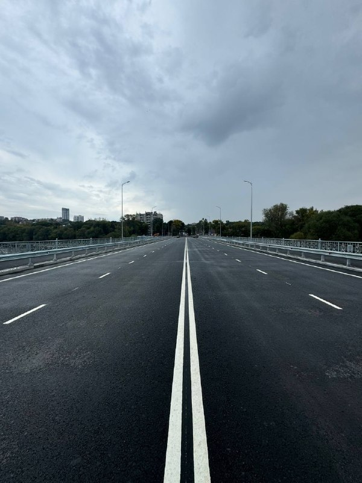
В Ульяновске после ремонта открыли библиотеку № 8 ▶️ Ульяновцев приглашают поучаствовать в проекте «Наследие» ▶️ Выборы, экология и соцконтракты.……
Достаточно было просто напечатать бюллетень. Четыре кандидата, четыре партии, четыре фамилии. На первый взгляд — обычные выборы.…
Общественность в недоумении. Ведь Алексей Русских — свой, плоть от плоти! Его коммунисты сами двигали на новый срок.…
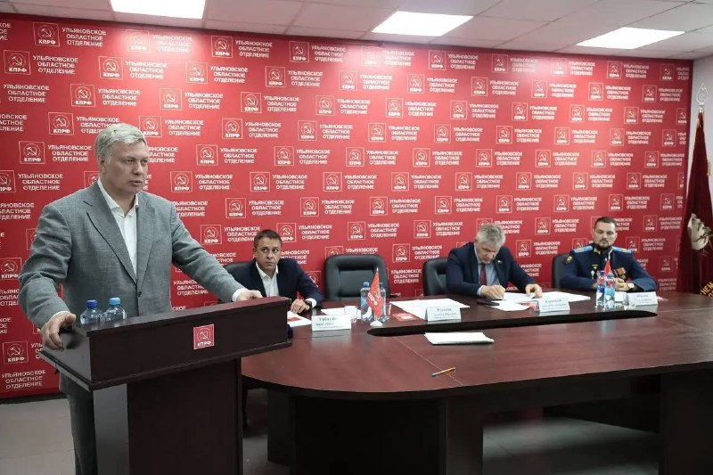
Отдельная часть помощи направится в подразделения, где служат ульяновские бойцы.…
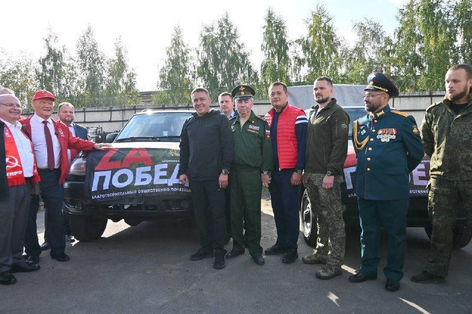
Губернатору Алексею Русских респект - дожали! — написал Василий Гвоздев. Движение обещают открыть на этой неделе. Ждёте открытия?
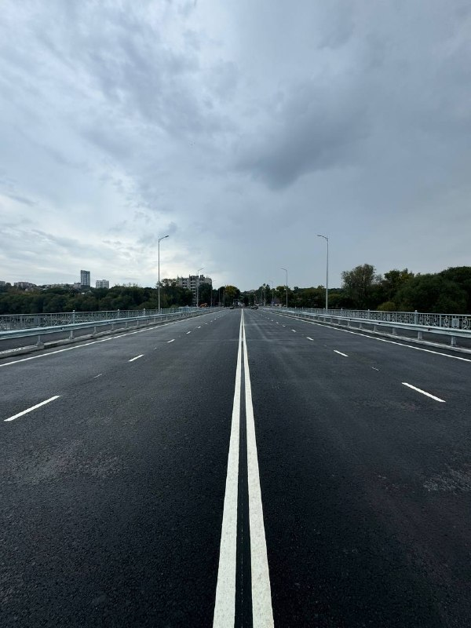
Стремление к объединению формировалось в нас в ответ на большие вызовы.…
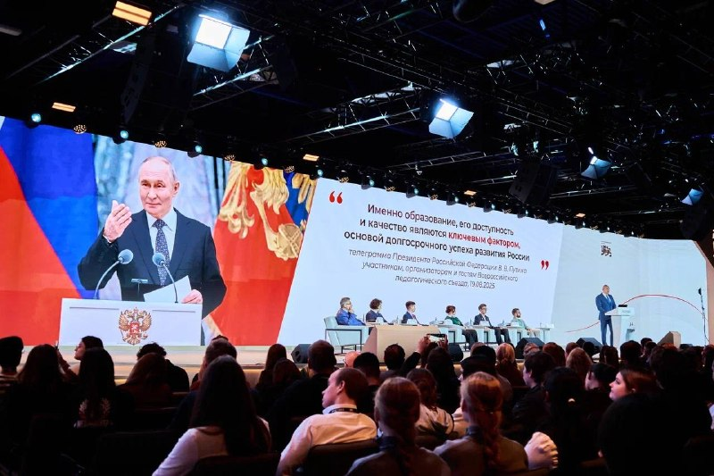
Яркое открытие с участием российских и зарубежных звезд уже прошло.…
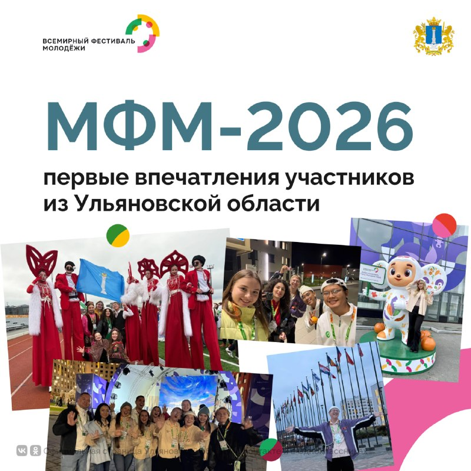
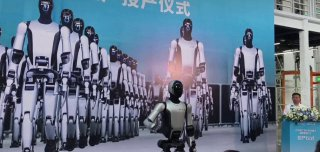
В год планируют выпускать до 10,000 гуманоидов. Можно не надо?…
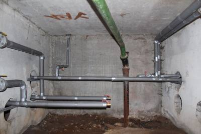

Цена модели осталась прежней — от 2,35 млн рублей, уточняет пресс-служба марки.
Тогда покупателю не придётся переплачивать из-за лишних наценок.…
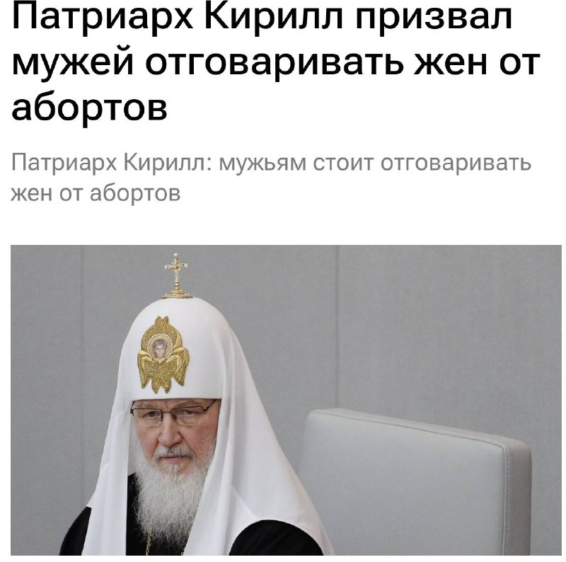
Ответственность за то, какие товары мы создаём, какие технологии развиваем, какие рабочие места формируем, какие ценности транслируем.…
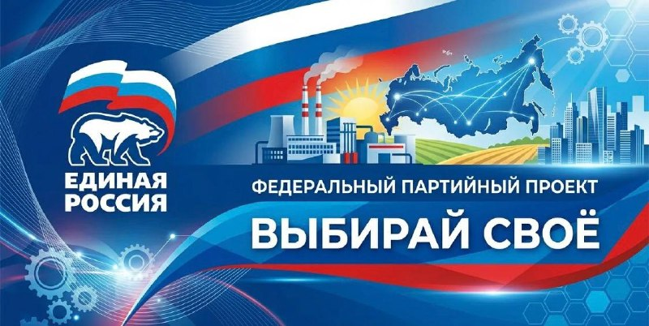
Они становятся пространством формирования смыслов, идентичности и стратегического суверенитета страны.…
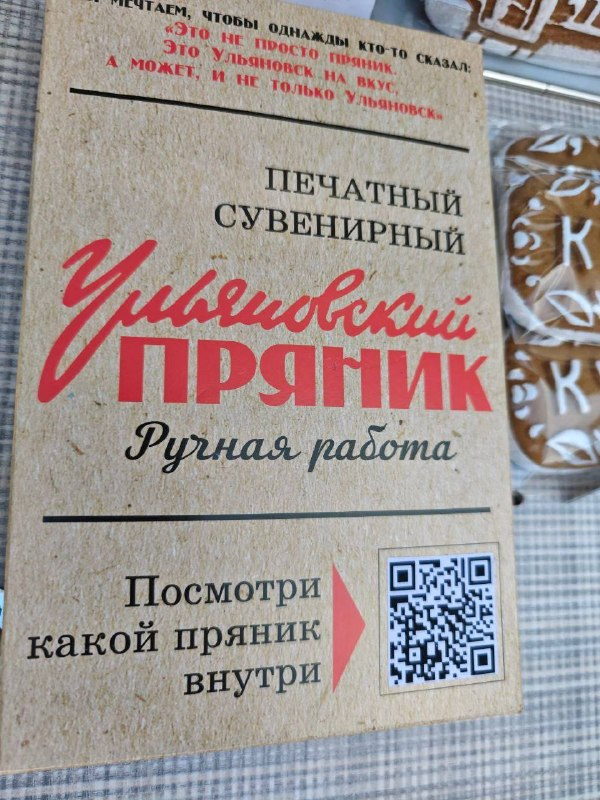
до ₽42 тыс. Чаще всего средства берут на поиск работы или открытие своего дела.…
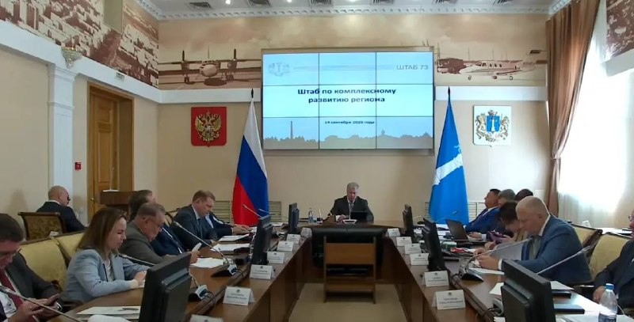
По словам доктора медицинских наук, профессора, врача аллерголога-иммунолога Александра Черданцева, кожа — это единый орган, который не уступает по значимости лёгким или сердцу.…
Процедуру транслировали в зал Всероссийского форума «Человекоцентричная медицина».…
Во времена всеобщей лжи говорить правду — это экстремизм С 16 сентября свои двери для пациентов открыл новый филиал городской поликлиники № 4.…
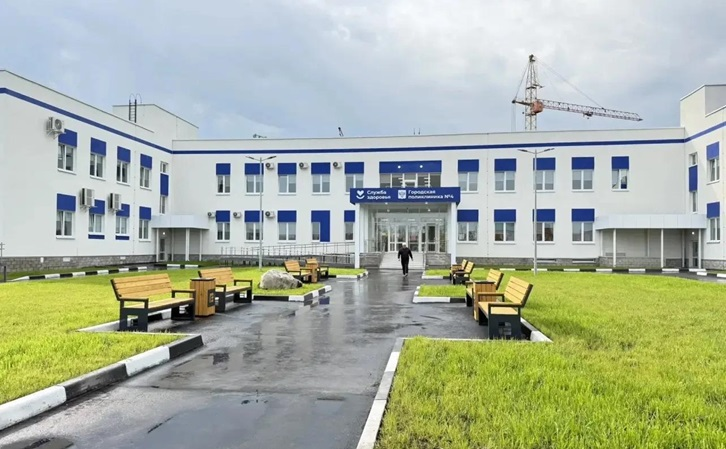
Операцию провел завотделением из Казани Михаил Володюхин, а ульяновские хирурги ассистировали ему, перенимая опыт прямо во время вмешательства.…
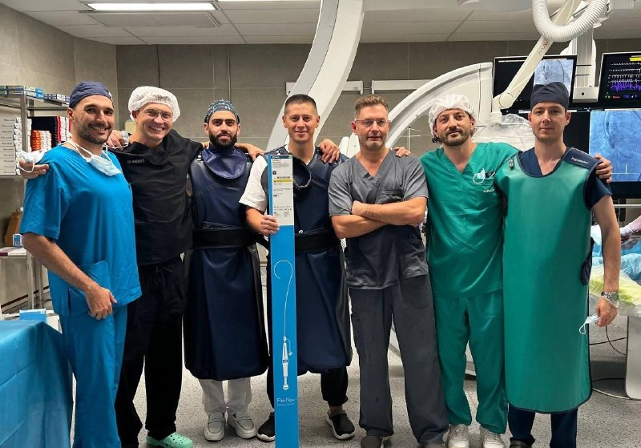
Неоднократно на встречах с ними звучали вопросы о доступности медицинской помощи, и теперь этот важный вопрос решён.…
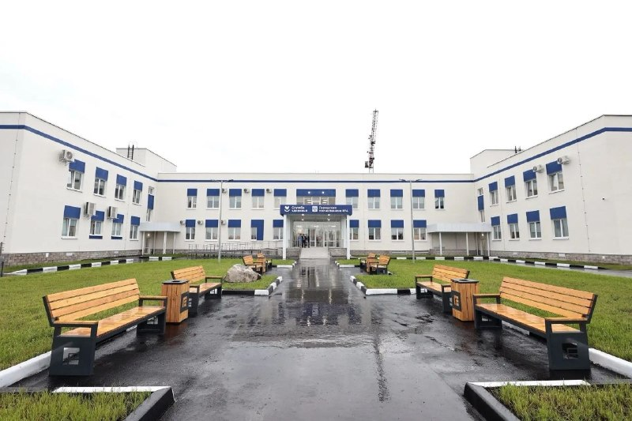
Операцию провел Михаил Володюхин из Казани, местные хирурги смотрели и учились.…
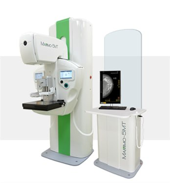
Женщина уже чувствует себя хорошо и в ближайшее время будет выписана домой.

За прошедшую неделю льготники Ульяновской области получили более 22 тысяч упаковок лекарств на сумму свыше 19 миллионов рублей.…
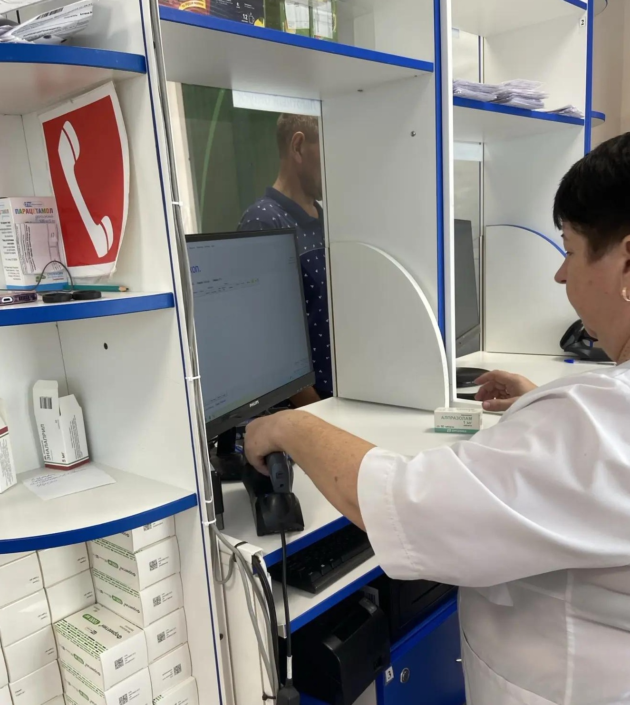
Деньги в размере трех миллионов рублей выделены федеральным, областным и местным бюджетами.…
После финиша Александр Семёнов, пилот команды ГАЗ Рейд Спорт, поделился впечатлениями о финальном дне соревнований: «Шли на всю катушку, не жалея ни колёс, ни подвески.…
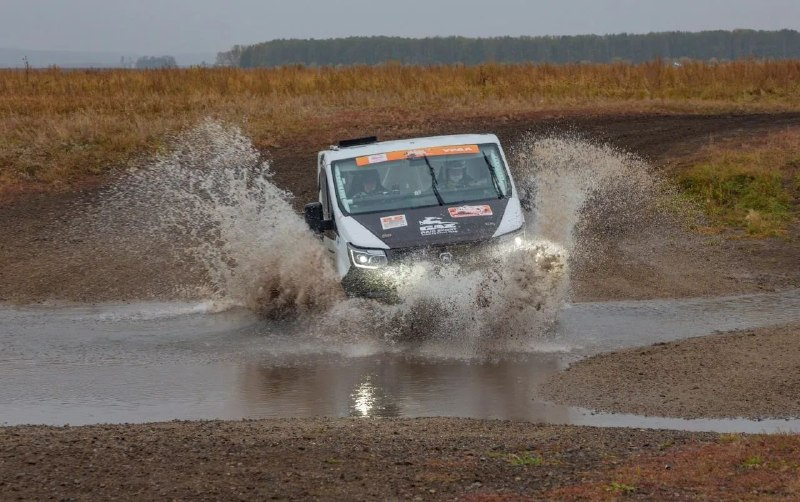
Горы бутылок, покрышки и всё что можно только. Ведь сами в этой мусорке теперь катаются, видимо их стихия.…
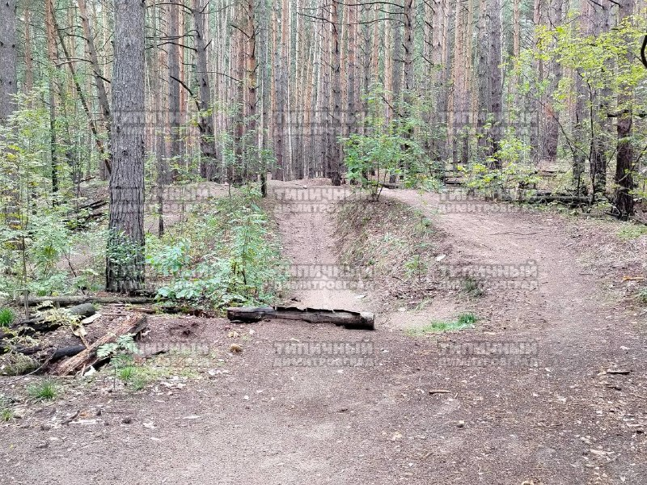
Как отметил министр физической культуры и спорта Ульяновской области Николай Цуканов, Андрей Круглов проявил лидерские качества и глубокое понимание командной работы, что очень важно в спорте, он способен не только вдохновить ульяновскую молодежь на спортивные достижения, но и стать для них примером патриотизма.……
В 18:30 стартует матч «Волга» — «Динамо».…
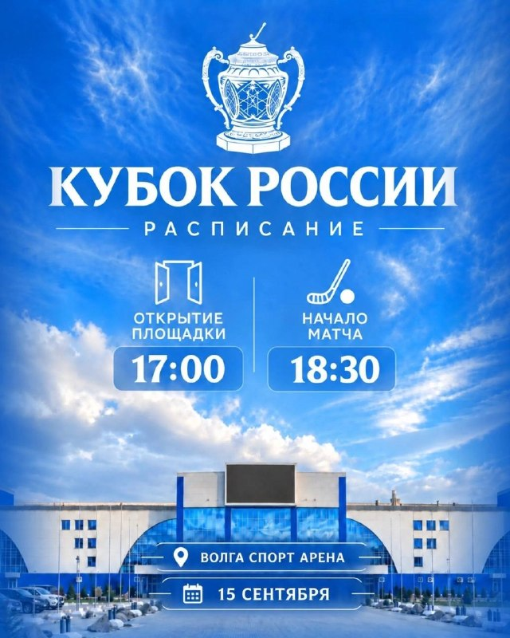
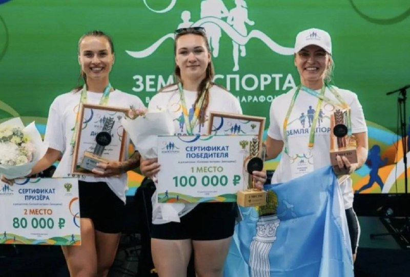
Сегодня юные спортсмены будут состязаться в квалификационных раундах и индивидуальных матчах.…
В 17:00 возле Дворца спорта «Волга-Спорт-Арена» пройдёт торжественное открытие, а в 18:30 начнётся матч.…

Алёна Горелова из Новоспасского района завоевала бронзу всероссийского финала марафона «Земля спорта» в дисциплине «Силовой экстрим».…
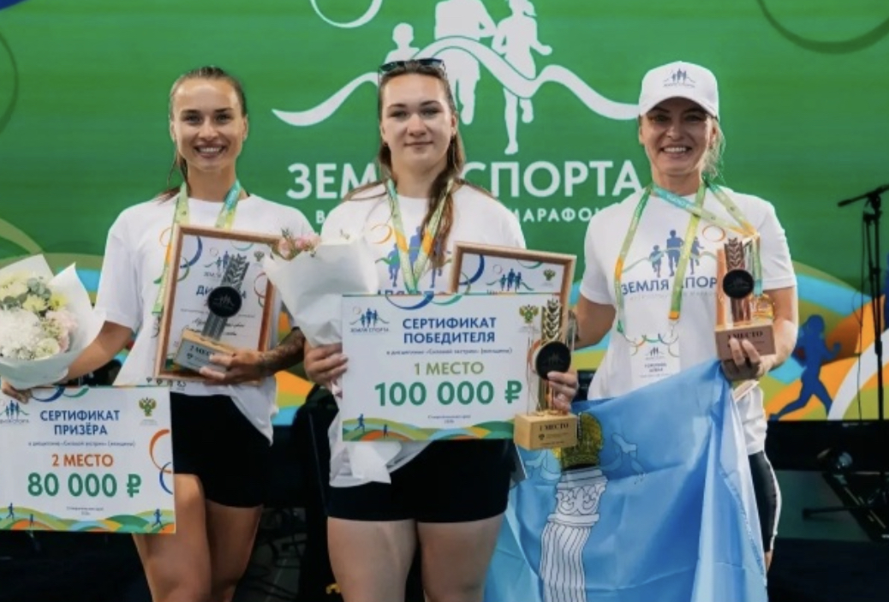

Житель Ямало-Ненецкого автономного округа годами числился должником по займу 2016 года — хотя никакого договора с микрофинансовой организацией не заключал.…
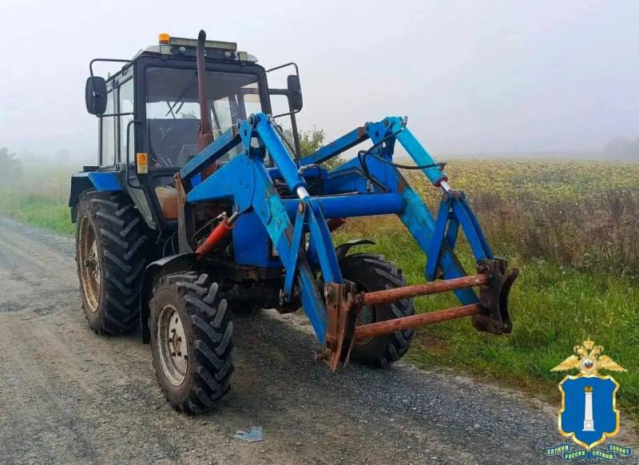
Подобная уверенность имеет под собой давнюю почву.…
🏥 В Засвияжье на улице Героя Российской Федерации Колпакова начало работу новое подразделение городской поликлиники №4.…
Дело дошло до Центрального окружного военного суда. Там его признали виновным и выписали штраф 400 тысяч рублей.…
В Инзенском районе 62-летний наёмный рабочий угнал трактор работодателя, чтобы покататься.…
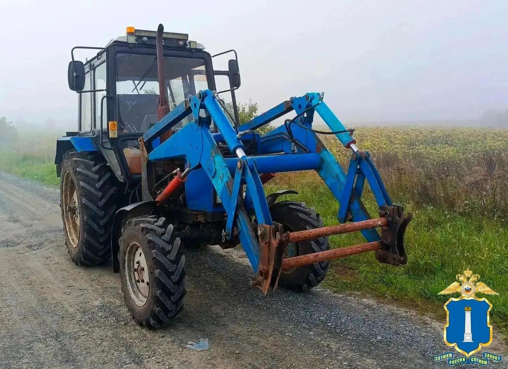
😳 ⚽️ Лучшие голы недели – уже в этой подборке!…
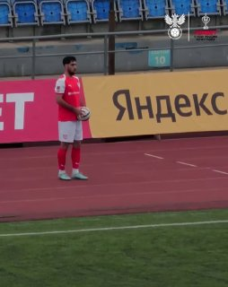
В тексте есть ссылка на сайт для «срочной проверки личности».…
Житель Ульяновской области дважды привлечён к уголовной ответственности за неуплату алиментов на несовершеннолетнюю дочь.…

Во времена всеобщей лжи говорить правду — это экстремизм Администрация Ульяновска обратилась в Арбитражный суд региона с требованием к ООО «Ленинские горки» провести демонтаж ряда объектов.…
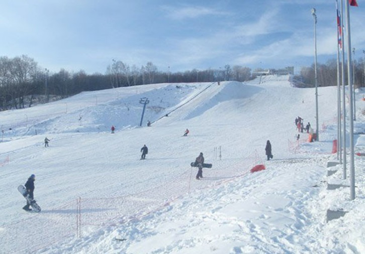
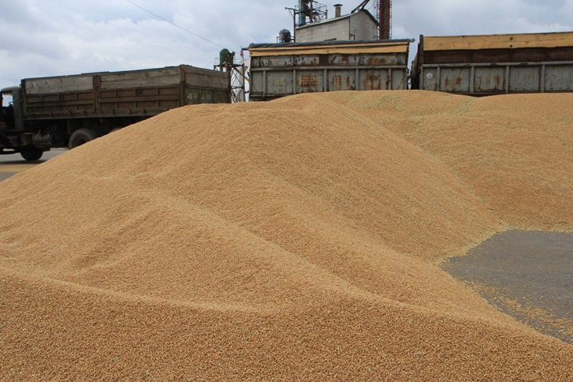
Во времена всеобщей лжи говорить правду — это экстремизм Года Управлением Россельхознадзора по Чувашской Республике и Ульяновской области прекращено действие 118 деклараций о соответствии на зерновую продукцию, произведённую сельхозтоваропроизводителями Ульяновской области.…
Экофермер Алексей Якушев изучает «ароматы», которыми дышат сотни людей каждый день.
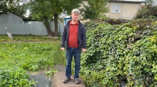
На сегодняшний день зерновые и зернобобовые культуры убраны более чем с 88% площадей — намолочено почти два миллиона тонн зерна при средней урожайности 36,4 центнера с гектара.…
Площадки также обяжут проверять карточки товаров и скрывать те, где обнаружена некорректная информация.
Каждый пятый отказался бы от покупки фитнес-абонементов, которыми потом не пользуется, а 18% желают заблокировать себе ночные покупки на маркетплейсах.…
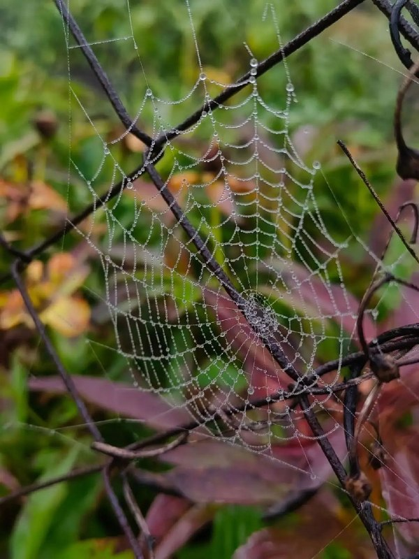
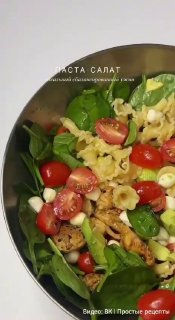
РФ — вход по Госуслугам или VK ID. Участие бесплатное. Один участник — одна работа.…
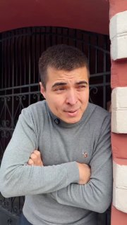
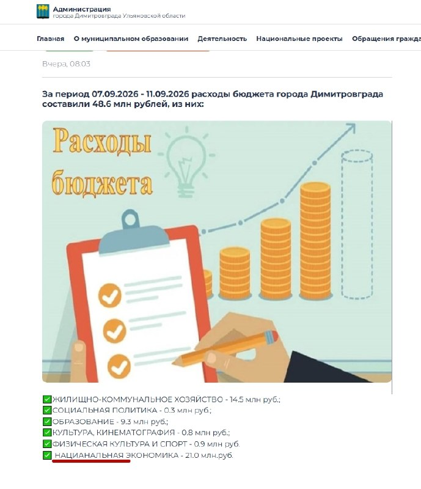
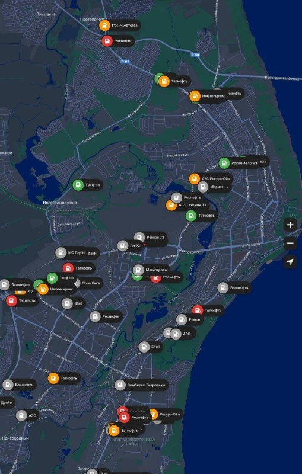
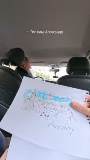
Ситуация изменилась только после обращения в прокуратуру: в результате дом 74-летней пенсионерки подключен к централизованному водоснабжению.…
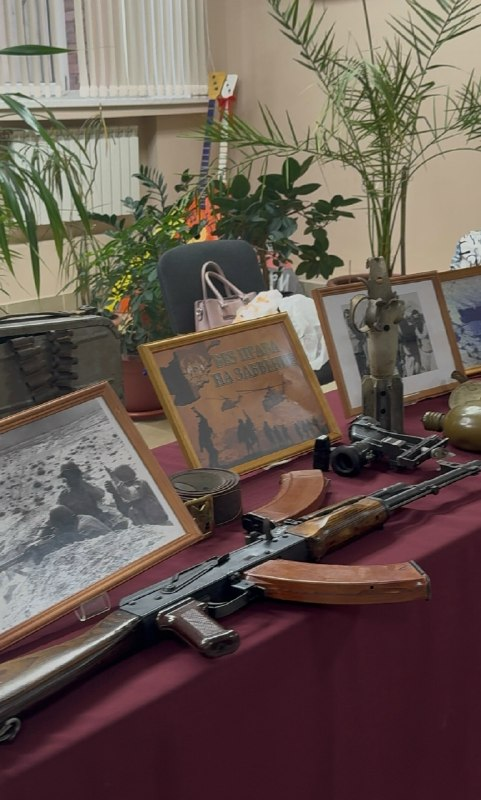
Вы объединились не просто как сослуживцы, а как настоящая семья, для которой слова «долг», «честь» и «товарищ» — не пустой звук.…
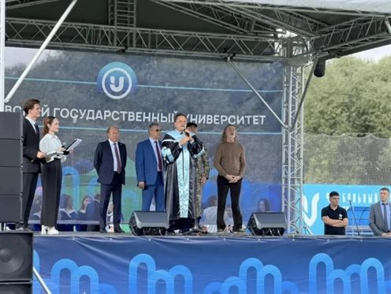
ИИ при этом не запрещают: студент сможет указать, где и зачем его использовал.…
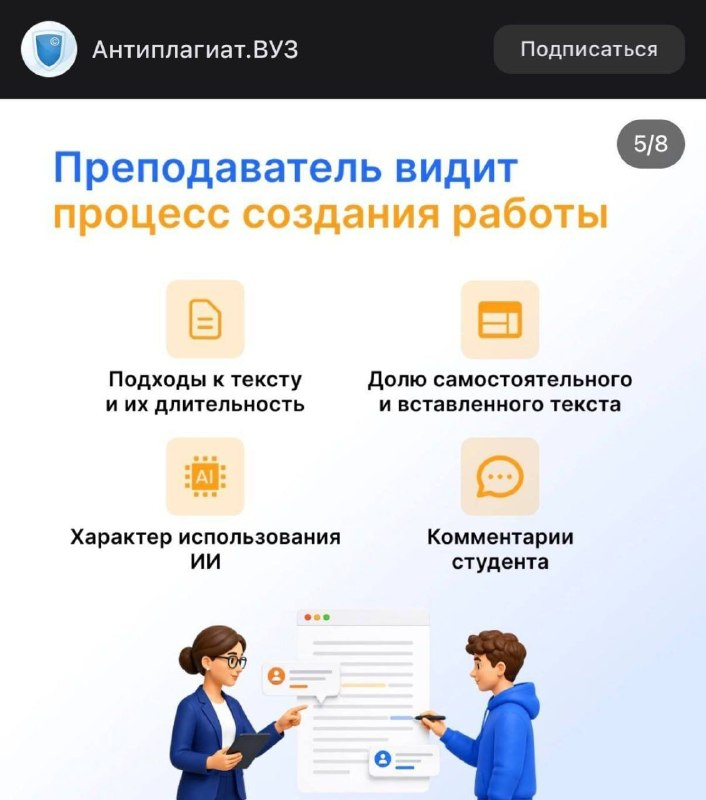
Прямая трансляция будет доступна на официальном сайте партии ER.RU , в социальных сетях ВКонтакте и Одноклассники .
Итоги работы в 2026 году озвучила на заседании штаба начальник управления образования Светлана Куликова.…
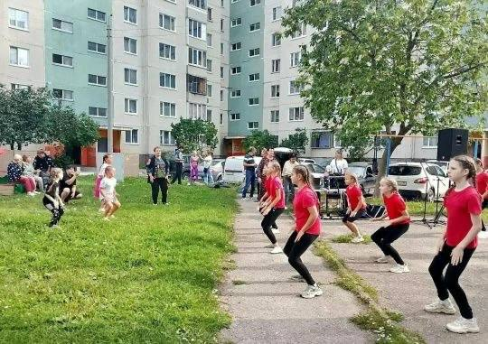
Как доложила начальник управления образования Светлана Куликова, на базе общеобразовательных организаций и центров детского творчества для 1 892 подростков в возрасте 14 лет и старше организовали 72 лагеря труда и отдыха.…
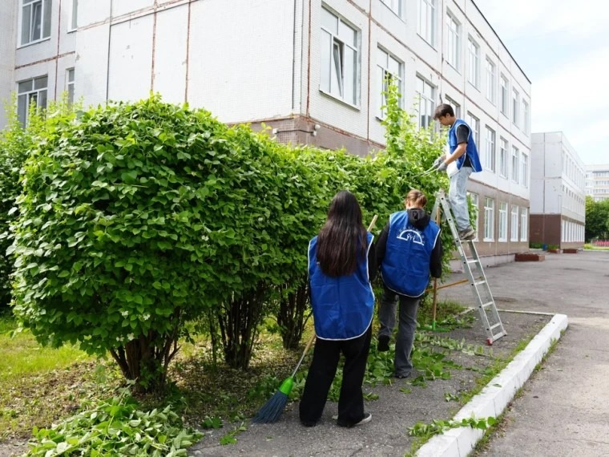
ИИ не запретят, но студенту придётся объяснять, зачем и где он его применял. Систему уже протестировали в некоторых вузах.
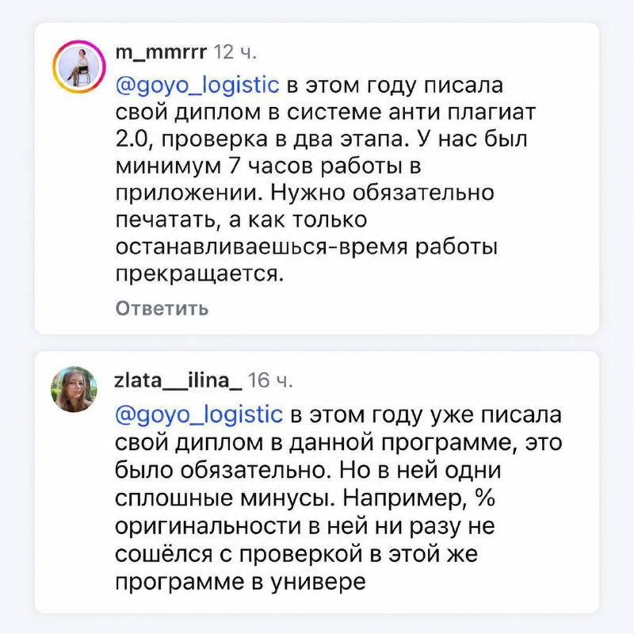
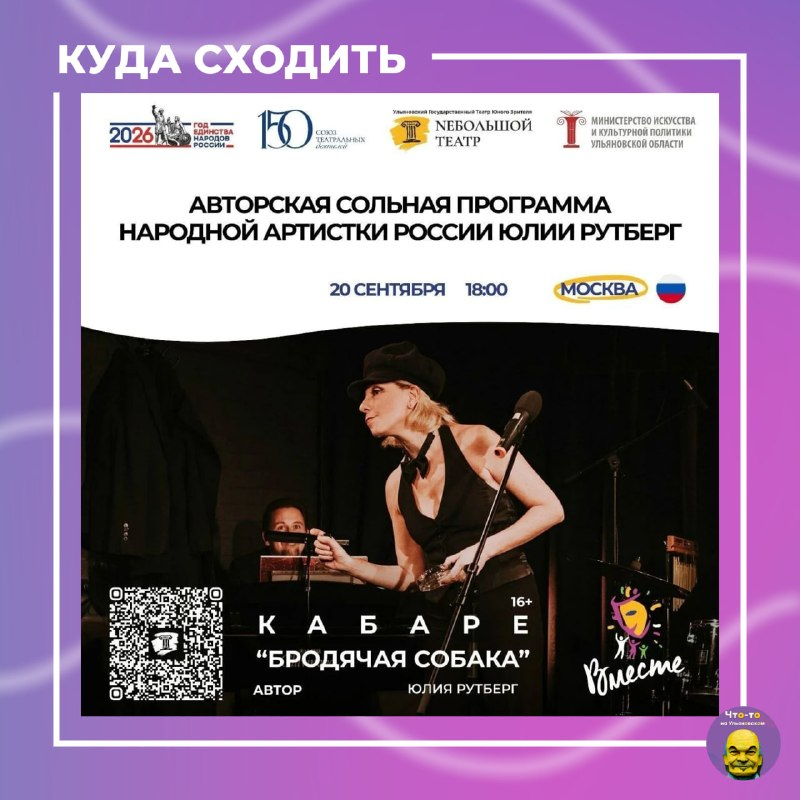
На сцене вместе с Юлией Рутберг — пианист, лауреат международных и всероссийских конкурсов Алексей Воронков. 16+. 📅 Когда: 20 сентября в 18:00 📍 Где: NEБОЛЬШОЙ ТЕАТР (ул.…
Дети сотрудников следственного управления и кадеты Следственного комитета России приняли участие в конкурсе детских творческих работ "Есть такая профессия - Родину защищать".…

В Мелекесском районе 19 сентября пройдёт эндуро-гонка «Слободская балка».
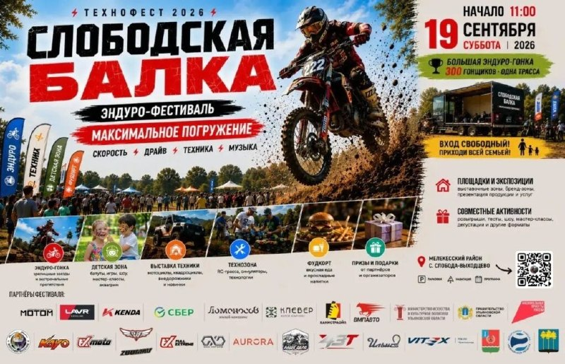
19 сентября в селе Слобода-Выходцево Мелекесского района пройдёт эндуро-гонка «Слободская балка. Максимальное погружение 2026».…
Доступна оплата «Пушкинской картой». 📅 Когда: 16 сентября в 19:00 📍 Где: NEБОЛЬШОЙ ТЕАТР (ул.…


• Уже более 20 лет он ведет легендарное радио-шоу «Трансмиссия» на Радио Рекорд и является одним из главных организаторов одноимённого транс-фестиваля - самого крупного в стране.…

| Тема | Завтра | Ожидание | Уверенность |
|---|---|---|---|
| Школы и вузы | ↓ спад | ~16.0 упоминаний | средняя |
| Культура и туризм | ↓ спад | ~6.8 упоминаний | средняя |
| День города (378 лет) | ↓ спад | ~0.0 упоминаний | средняя |
| БПЛА и воздушные угрозы | ↓ спад | ~10.4 упоминаний | средняя |
| Авиапром / УКБП / Ил-114 | ↓ спад | ~0.0 упоминаний | высокая |
| Выборы-2026 | ↓ спад | ~3.7 упоминаний | средняя |